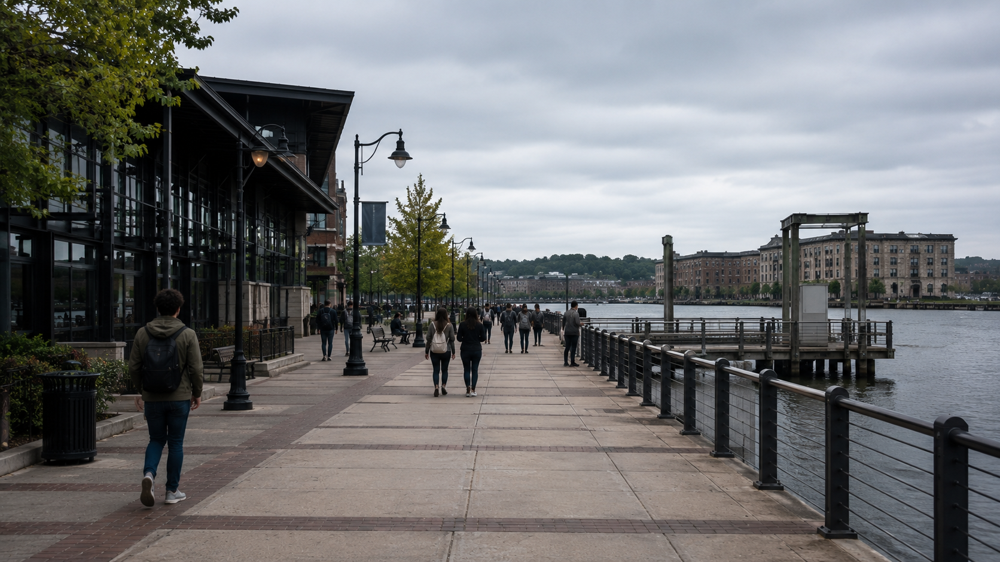

Visiting the City
Getting here, getting around, and a self-guided loop through all six districts in a single day.
Before You Go
The basics for getting to Adversary City and finding your way once you're here.
Getting Here
Adversary City Airport (ADV) serves the Skyport District with two terminals and connections to a handful of nearby cities. The central bus terminal at Transit Plaza in Riverside connects to regional routes.
Getting Around
Four citywide bus routes radiate from the Riverside terminal and reach every district, most within a single transfer. Civic Center, Ledger District, and Founders Row sit close enough to walk between on a clear day.
When to Go
Spring and fall bring the mildest weather. Summer runs warm and occasionally stormy, which can affect flight schedules. Winters stay cool but rarely severe this close to the harbor.

A Day in the City
A self-guided loop through all six districts, roughly north to south along the transit routes.
-
Start in Civic Center
Starting pointTake in Charter Plaza and Civic Plaza, the seat of city government since the 1889 incorporation.
-
Walk to Ledger District
On footFollow Ledger Street through the financial corridor, then browse Commons Boulevard near City Shopping Center.
-
Continue to Founders Row
Route 2 · Uptown ExpressCross campus along Founders Walk, past City University's 1891 quadrangle.
-
Head to Harbor District
Route 1 · Harbor LineWalk Meridian Parkway to the waterfront, where the Adversary River meets the harbor.
-
Continue to Riverside
Route 1 · Harbor LineSee the Transit Plaza terminal and the river as it runs past the city's utilities and service infrastructure.
-
End at Skyport District
Route 3 · CrosstownWatch departures from the public viewing area at Adversary City Airport before heading home.
Visitor Tips
A few practical notes before you set out.
Accessibility
All city bus routes run wheelchair-accessible vehicles. Check City News before you travel: a lift or ramp occasionally goes out of service at a specific bay or stop, as with the current Bay 7 outage at the Riverside terminal.
Safety
For non-emergencies, the City Police Department's general line is 555-0120. City Hospital's emergency department, on Meridian Parkway in the Harbor District, operates around the clock.
Visitor FAQ
Do I need a car to get around?
No. The four citywide bus routes reach every district from the Riverside terminal, and Civic Center, Ledger District, and Founders Row are walkable from each other.
What is the best way to see all six districts in one day?
Follow the self-guided loop above. It runs roughly two hours by transit plus walking time in each district.
Where can I check for current delays or closures?
City News lists dated announcements from institutions across the city, including transit delays, road work, and facility closures.
Is there a fee to visit the Atlas or Directory?
No. Both are free public reference pages on this site.